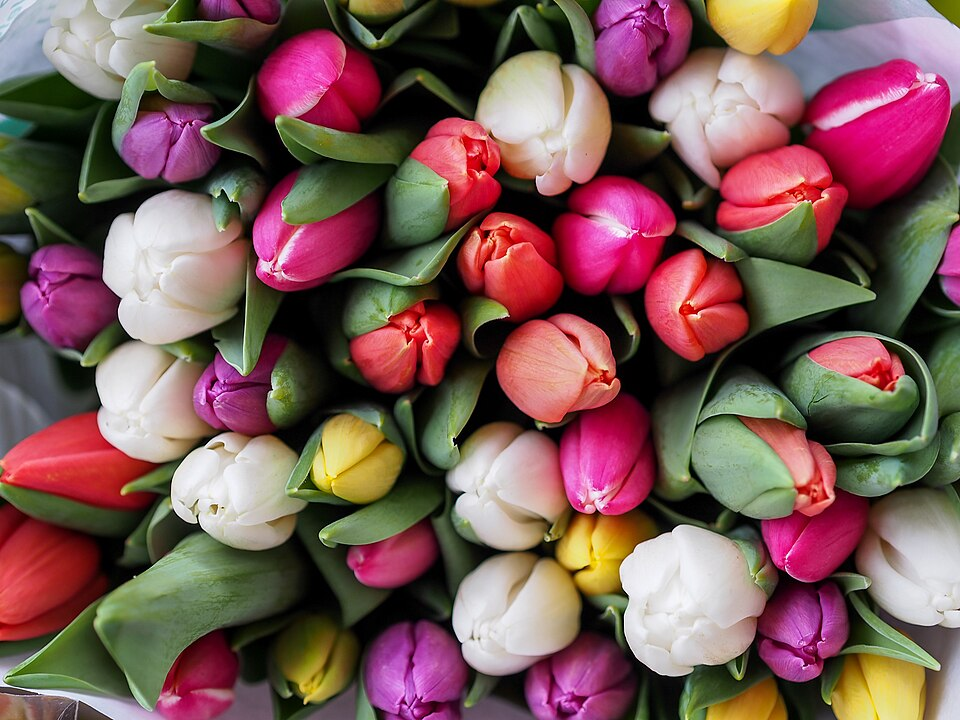

Guía · todo el año
Qué significa cada color de flor (y cuándo regalarlo)
En TikTok las fechas se nombran por color: las amarillas, las moradas, las azules. Esta es la chuleta: qué transmite cada color y en qué días del año se regala.

- Amarillo
- Alegría y amistad21 de septiembre
- Azul
- Lealtad y confianza3 de octubre
- Morado
- Admiración9 de noviembre
- Rojo
- Amor romántico14 de febrero
Flores amarillas
Alegría, amistad, esperanza y nuevos comienzos. Es el color más fácil de regalar: vale para pareja, amigas o familia sin que suene a declaración.
Flores rojas
Amor romántico y pasión: la rosa roja es el código universal del “me gustas”. En diciembre, en México, el rojo es también el de la nochebuena y las rosas de la Virgen de Guadalupe.
Flores rosas
Cariño, ternura y agradecimiento. Menos intenso que el rojo, por eso es el color de las madres, las amigas y los primeros detalles.
Flores azules
Lealtad, confianza y calma. Las flores azules son escasas en la naturaleza y eso las hace especiales; en redes se volvieron “las flores de ellos”.
Flores moradas
Admiración, respeto y algo de misterio, como el admirador sin nombre de “Un ramito de violetas”. Se regalan a tu “persona morada”.
Flores naranjas
Calidez y energía. En México es, sobre todo, el color del cempasúchil, la flor que según la tradición guía a las almas hasta la ofrenda.
Flores blancas
Paz, pureza y recuerdo. Según el país, el blanco es buena suerte, como el muguet que se regala en Francia el 1 de mayo, o memoria, como los crisantemos de Todos los Santos.
Un mismo color no dice lo mismo en todas partes
El significado de una flor depende del país y del momento. El crisantemo blanco es flor de cementerio en España y en cambio es habitual en ramos en otros lugares. La mimosa del 8 de marzo es un regalo en Italia, mientras que en España y Latinoamérica el 8M es sobre todo una jornada de reivindicación.
Si dudas, mezcla colores: un ramo variado, como el de tulipanes de la foto, casi nunca falla. Y si ninguna fecha va contigo, recuerda que cualquier día sirve para comprarte flores a ti.
Preguntas frecuentes
¿Qué significa regalar flores amarillas?
Alegría, amistad y esperanza. Se regalan sobre todo el 21 de septiembre y, en México, el 21 de marzo.
¿Qué significa regalar flores azules?
Lealtad y confianza. Se regalan el 3 de octubre, Día del Novio, y el 19 de noviembre, Día del Hombre.
¿Qué significa regalar flores moradas?
Admiración y respeto. Se regalan el 9 de noviembre a tu “persona morada”.
¿Qué significan las flores rojas?
Amor romántico y pasión. Son las de San Valentín y Sant Jordi.
¿Qué significan las flores blancas?
Paz, pureza y recuerdo. En Francia el muguet blanco del 1 de mayo trae suerte; en España los crisantemos blancos se llevan al cementerio en Todos los Santos.
Última revisión: .